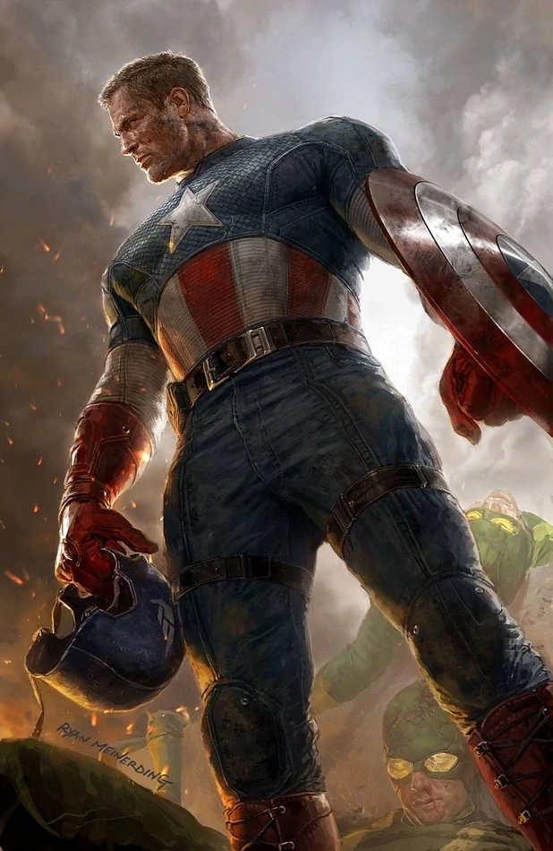

Welcome to the House of Heroes

Captain America is a superhero created by Joe Simon and Jack Kirby who
appears in American comic books published by Marvel Comics. The
character first appeared in Captain America Comics #1, published on
December 20, 1940, by Timely Comics, a corporate predecessor to
Marvel. Captain America's civilian identity is Steven "Steve" Rogers,
a frail man enhanced to the peak of human physical perfection by an
experimental "super-soldier serum" after joining the United States
Army to aid the country's efforts in World War II. Equipped with an
American flag–inspired costume and a virtually indestructible shield,
Captain America and his sidekick Bucky Barnes clashed frequently with
the villainous Red Skull and other members of the Axis powers. In the
final days of the war, an accident left Captain America frozen in a
state of suspended animation until he was revived in modern times. He
resumes his exploits as a costumed hero and becomes leader of the
superhero team the Avengers, but frequently struggles as a "man out of
time" to adjust to the new era. The character quickly emerged as
Timely's most popular and commercially successful wartime creation
upon his original publication, though the popularity of superheroes
declined in the post-war period and Captain America Comics was
discontinued in 1950. The character saw a short-lived revival in 1953
before returning to comics in 1964, and has since remained in
continuous publication. Captain America's creation as an explicitly
anti-Nazi figure was a deliberately political undertaking: Simon and
Kirby were stridently opposed to the actions of Nazi Germany and
supporters of U.S. intervention in World War II, with Simon conceiving
of the character specifically in response to the American
non-interventionism movement. Political messages have subsequently
remained a defining feature of Captain America stories, with writers
regularly using the character to comment on the state of American
society and government. Having appeared in more than ten thousand
stories in more than five thousand media formats, Captain America is
one of the most popular and recognized Marvel Comics characters, and
has been described as an icon of American popular culture. Though
Captain America was not the first United States–themed superhero, he
would become the most popular and enduring of the many patriotic
American superheroes created during World War II. Captain America was
the first Marvel character to appear in a medium outside of comic
books, in the 1944 serial film Captain America; the character has
subsequently appeared in a variety of films and other media, including
the Marvel Cinematic Universe, where he was portrayed by actor Chris
Evans from the character's first appearance in Captain America: The
First Avenger (2011) to his final appearance in Avengers: Endgame
(2019).
Spiderman
 Spider-Man is a superhero in American comic books published by Marvel
Comics. Created by writer-editor Stan Lee and artist Steve Ditko, he
first appeared in the anthology comic book Amazing Fantasy #15 (August
1962) in the Silver Age of Comic Books. He has been featured in comic
books, television shows, films, video games, novels, and plays.
Spider-Man has the secret identity of Peter Benjamin Parker.
Initially, Peter was depicted as a teenage high-school student and an
orphan raised by his Aunt May and Uncle Ben in New York City after his
parents, Richard and Mary Parker, died in a plane crash. Lee, Ditko,
and later creators had the character deal with the struggles of
adolescence and young adulthood and gave him many supporting
characters, such as Flash Thompson, J. Jonah Jameson, and Harry
Osborn; romantic interests Gwen Stacy, Mary Jane Watson, and the Black
Cat; and enemies such as Doctor Octopus, the Green Goblin, and Venom.
In his origin story, Peter gets his superhuman spider powers and
abilities after being bitten by a radioactive spider. These powers
include superhuman strength, agility, reflexes, stamina, durability,
coordination, and balance; clinging to surfaces and ceilings like a
spider; and detecting danger with his precognition ability called
"spider-sense". He builds wrist-mounted "web-shooter" devices that
shoot artificial spider-webs of his own design, which he uses both for
fighting and travel, or "web swinging" across the city. Peter Parker
initially used his powers for his personal gain, but after his Uncle
Ben was killed by a thief that Peter could not stop, he began to use
his powers to fight crime by becoming Spider-Man. Before Spider-Man
first appeared in the early 1960s, teenagers in superhero comic books
were usually relegated to the protagonist's sidekick role. The
Spider-Man comic series broke ground by featuring Peter Parker, a high
school student from the Queens borough of New York City, as
Spider-Man's secret identity, whose "self-obsessions with rejection,
inadequacy, and loneliness" were issues to which young readers could
relate.[8] While Spider-Man was a quintessential sidekick, unlike
previous teen heroes Bucky Barnes and Robin, Spider-Man had no
superhero mentor like Captain America and Batman; he had learned the
lesson for himself that "with great power comes great responsibility"
—a line included in a text box in the final panel of the first
Spider-Man's origin story, but later retroactively attributed to the
late Uncle Ben Parker.
Spider-Man is a superhero in American comic books published by Marvel
Comics. Created by writer-editor Stan Lee and artist Steve Ditko, he
first appeared in the anthology comic book Amazing Fantasy #15 (August
1962) in the Silver Age of Comic Books. He has been featured in comic
books, television shows, films, video games, novels, and plays.
Spider-Man has the secret identity of Peter Benjamin Parker.
Initially, Peter was depicted as a teenage high-school student and an
orphan raised by his Aunt May and Uncle Ben in New York City after his
parents, Richard and Mary Parker, died in a plane crash. Lee, Ditko,
and later creators had the character deal with the struggles of
adolescence and young adulthood and gave him many supporting
characters, such as Flash Thompson, J. Jonah Jameson, and Harry
Osborn; romantic interests Gwen Stacy, Mary Jane Watson, and the Black
Cat; and enemies such as Doctor Octopus, the Green Goblin, and Venom.
In his origin story, Peter gets his superhuman spider powers and
abilities after being bitten by a radioactive spider. These powers
include superhuman strength, agility, reflexes, stamina, durability,
coordination, and balance; clinging to surfaces and ceilings like a
spider; and detecting danger with his precognition ability called
"spider-sense". He builds wrist-mounted "web-shooter" devices that
shoot artificial spider-webs of his own design, which he uses both for
fighting and travel, or "web swinging" across the city. Peter Parker
initially used his powers for his personal gain, but after his Uncle
Ben was killed by a thief that Peter could not stop, he began to use
his powers to fight crime by becoming Spider-Man. Before Spider-Man
first appeared in the early 1960s, teenagers in superhero comic books
were usually relegated to the protagonist's sidekick role. The
Spider-Man comic series broke ground by featuring Peter Parker, a high
school student from the Queens borough of New York City, as
Spider-Man's secret identity, whose "self-obsessions with rejection,
inadequacy, and loneliness" were issues to which young readers could
relate.[8] While Spider-Man was a quintessential sidekick, unlike
previous teen heroes Bucky Barnes and Robin, Spider-Man had no
superhero mentor like Captain America and Batman; he had learned the
lesson for himself that "with great power comes great responsibility"
—a line included in a text box in the final panel of the first
Spider-Man's origin story, but later retroactively attributed to the
late Uncle Ben Parker.
Hulk
 The Hulk is a superhero appearing in American comic books published by
Marvel Comics. Created by writer Stan Lee and artist Jack Kirby, the
character first appeared in the debut issue of The Incredible Hulk
(May 1962). In his comic book appearances, the character, who has
dissociative identity disorder (DID), is primarily represented by the
alter ego Hulk, a green-skinned, hulking, and muscular humanoid
possessing a limitless degree of physical strength, and the alter ego
Dr. Robert Bruce Banner, a physically weak, socially withdrawn, and
emotionally reserved physicist, both of whom typically resent each
other. Following his accidental exposure to gamma rays while saving
the life of Rick Jones during the detonation of an experimental bomb,
Banner is physically transformed into the Hulk when subjected to
emotional stress, at or against his will. This transformation often
leads to destructive rampages and conflicts that complicate Banner's
civilian life. The Hulk's level of strength is usually conveyed
proportionate to his anger level. Commonly portrayed as a raging
savage, the Hulk has been represented with other alter egos, from a
mindless, destructive force (War) to a brilliant warrior
(World-Breaker), a self-hating protector (the Devil Hulk), a genius
scientist in his own right (Doc Green), and a gangster (Joe Fixit).
The Hulk is a superhero appearing in American comic books published by
Marvel Comics. Created by writer Stan Lee and artist Jack Kirby, the
character first appeared in the debut issue of The Incredible Hulk
(May 1962). In his comic book appearances, the character, who has
dissociative identity disorder (DID), is primarily represented by the
alter ego Hulk, a green-skinned, hulking, and muscular humanoid
possessing a limitless degree of physical strength, and the alter ego
Dr. Robert Bruce Banner, a physically weak, socially withdrawn, and
emotionally reserved physicist, both of whom typically resent each
other. Following his accidental exposure to gamma rays while saving
the life of Rick Jones during the detonation of an experimental bomb,
Banner is physically transformed into the Hulk when subjected to
emotional stress, at or against his will. This transformation often
leads to destructive rampages and conflicts that complicate Banner's
civilian life. The Hulk's level of strength is usually conveyed
proportionate to his anger level. Commonly portrayed as a raging
savage, the Hulk has been represented with other alter egos, from a
mindless, destructive force (War) to a brilliant warrior
(World-Breaker), a self-hating protector (the Devil Hulk), a genius
scientist in his own right (Doc Green), and a gangster (Joe Fixit).
Discover our gallery for more
View Gallery